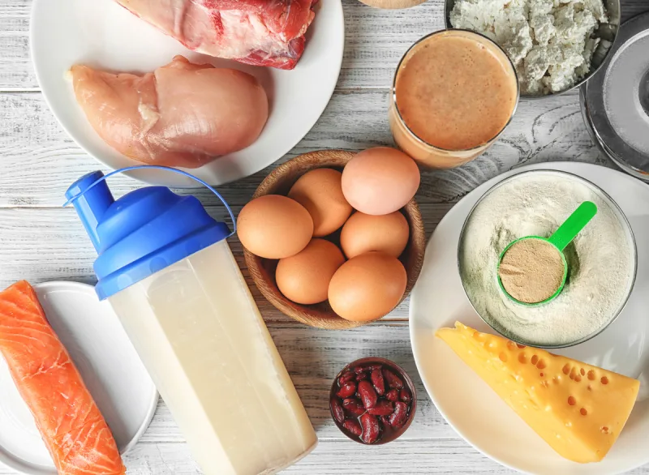

Serial No. |
Image |
Facts |
1 |
|
You may not know what you're consuming
"The biggest danger with consuming protein powders every day is the potential contamination of the supplements. The Food and Drug Administration (FDA) does not regulate all supplements. This means that what is inside the bottle may not be what is on the label," explains Emily Danckers, MS, RD, registered dietitian and founder of Emily RD Nutrition Coaching who has worked with professional and collegiate athletes.
"Supplements can be contaminated with ingredients not listed on the label unless the supplement is third-party certified. This means a company like NSF, Informed Choice, or USP has verified that the supplement is clean and only contains what is on the label. If a protein powder is third-party certified, there will be a label on the tub. It's important to note that this label only means that what is on the label is in the bottle in the printed amounts…it does not mean that the supplement will be effective," she adds.
|
2 |
|
You may gain weight:
"Some protein powders may be high in sugars and calories, which can cause unwanted weight gain," says Melissa Nieves, RD a registered dietitian at Kemtai, a virtual personal trainer app. Sugar isn't the only contributor to extra calories in this supplement—protein is just as much of a factor. "Excess protein intake can lead to weight gain as the surplus protein in the body is stored as fat as it has nowhere else to go," adds Lina Velikova, MD, PhD, a Clinical Immunologist, Gastroenterologist, and medical advisor at Supplements101.
|
3 |
|
You may be displacing other important nutrients:
"For most healthy individuals, the 20-30 grams of protein in a shake is not really a huge concern to consume every day. However, it becomes a concern when a number of daily protein shakes start to displace other important nutrients in the diet like healthy fats and fiber-rich, healthy carbs," says registered dietitian Abbey Sharp, RD, blogger and YouTuber at Abbey's Kitchen.
Garrett Swisher, RD, an Indiana University Health Clinical Dietician shares the same concern: "More protein does not really offer any kind of extra benefits. Focusing on too much protein can offset the intake of other important foods and the nutrients they contain like fruit and vegetables," he says. "It's generally never a good idea to focus on one food/nutrient if you are neglecting other elements of a healthy diet. |
4 |
 |
You may be forgetting about whole food sources of protein:
"Protein powder is a good supplement; however, it should not replace whole food protein sources like meats, poultry legumes, and nuts/seeds," says registered dietitian Alana Kessler, MS, RDN the founder of Be Well by Alana Kessler.
|
5 |
|
You could be exacerbating a food intolerance:
"Many protein powders have milk protein in them. For individuals that have a lactose sensitivity, this can cause discomfort and digestive distress leading to malabsorption of essential minerals," says Kessler.
|